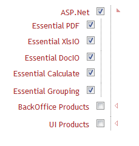

The RightToLeft (RTL) property in the TreeView controlgives the possibility to render the control from right to left.
Properties
|
Property |
Description |
Type |
Data Type |
|
RightToLeft |
Enables or disables the RightToLeft feature in the TreeView control. |
Server side |
bool |
Sample Link
1. Open the Essential Tools sample browser from the dashboard. (Refer to the Samples and Location chapter)
2. Navigate to Tools.Mvc > TreeView > RightToLeft
RTL support can be added to the control in two ways:
· TreeViewBuilder
· TreeViewModel
Using Builder
The following steps are used for adding RTL feature to a TreeView control using the builder.
In the view, invoke the TreeView helper with the control ID as an argument followed by the RightToLeft method as an argument.
|
[ASPX]
<%=Html.Syncfusion().TreeView("myTreeView", "treeviewContents").RightToLeft(true) .ShowCheckbox(true)
%>
|
|
[Razor]
@Html.Syncfusion().TreeView("myTreeView", "treeviewContents").RightToLeft(true) .ShowCheckbox(true)
|
2. Build and run the application.
Using Model
The following steps are used for adding the RTL feature to a TreeView control through the Model.
1. Create an instance of TreeViewModel in the controller.
|
Controller public ActionResult Index() { //create instance of TreeViewModel TreeViewModel myModel = new TreeViewModel(); myModel.RightToLeft = true; myModel.ShowCheckbox = true; ViewData["myTreeView"] = myModel; return View(); }
|
2. In the view, invoke the TreeView helper with the View Data Key as the control ID.
|
View [ASPX]
<%=Html.Syncfusion().TreeView("myTreeView",”treeviewContents”)%>
|
|
View [cshtml] @Html.Syncfusion().TreeView("myTreeView", "treeviewContents").RightToLeft(true) .ShowCheckbox(true) |
3. Build and run the application.
The following screenshot illustrates the output.

Figure 328: TreeView with RTL